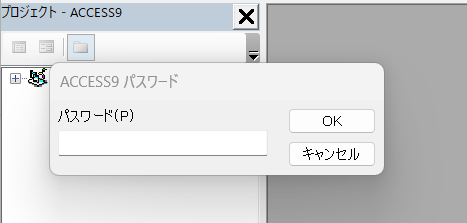

概要
VBAコードがパスワードで保護されたMDBファイルを保守しなければならない、だが前任者が退職しておりパスワードがわからない・・・というケースは往々にして存在します。このような場合にVBAコードの保護を解除する方法について、解除できる可能性が高いと考えられる順に、いくつかの方法を検討してみます。
免責事項
ここに記載した情報は、あくまで技術的な可能性に関するものであり、特定の方法の成功を保証するものではありません。また、これらの方法の実行によって生じたいかなる損害についても責任を負いかねます。パスワード解除ツールの使用やファイルの直接編集などは、ご自身の責任と判断において、関連する法律や倫理規定を遵守の上、慎重に行ってください。
重要な前提
- これから説明する方法は、もっぱら技術的な可能性に基づくものです。そのため、実行にあたっては組織内において規定されたセキュリティポリシーや法務・倫理規定を遵守することが最優先になります。
- 作業前には、対象のMDBファイルの完全なバックアップを必ず作成し、作業はバックアップしたコピーファイルに対して行ってください。オリジナルファイルは絶対に直接編集しないでください。
- 以下の方法は、パスワード保護の解除を保証するものではない点にご留意ください。しかし、パスワードロックを解除できる可能性が高い順には言及しています。
パスワード解除の方法
サードパーティ製 VBAパスワード解除・回復ツール
先ほど、「こういうケースは往々にして存在する」と述べたとおり需要は多いのでしょう、インターネット上にはVBAのパスワード解除をうたったツールが多数存在します。これらは、Access VBAのパスワードを解除したり、回復したりすることを目的とした専用のサードパーティ製ソフトウェア（有償・無償あり）です。これらのツールは、AccessのVBAパスワード保護メカニズムの既知の弱点や特定のアルゴリズムを解析して作られていることが多く、比較的高い成功率が期待できます。前任者が設定したパスワードの複雑さやAccessのバージョンにもよりますが、多くの場合、最も手軽かつ成功の可能性が高い方法と言えます。
一般的な動作原理
ツールによって異なりますが、一般的には以下のようなアプローチを取るようです。
- パスワード情報を直接ファイルから削除または無効化する。
- パスワードを特定の値（例：空文字や既知の文字列）にリセットする。
- 総当たり攻撃や辞書攻撃を組み合わせてパスワードを特定する（回復ツールの場合）。
手順
- 信頼できるVBAパスワード解除/回復ツールを選定し、入手します。
- ツールをPCにインストールまたは実行します。
- ツールに対象のMDBファイル（コピー）を指定します。
- ツールの指示に従って、パスワード解除または回復処理を実行します。
- 処理後、MDBファイルを開き、VBAエディタ（Alt + F11）でコードにアクセスできるか確認します。
セキュリティ上の注意点
- ツールの信頼性：インターネット上には多くのツールがありますが、中にはマルウェアやスパイウェアが含まれているものも存在します。評判の良い、信頼できる開発元やレビューの多いツールを選んでください。公式の配布元からダウンロードすることが重要です。
- 試用版の機能：無償版や試用版は機能が制限されている（例：パスワードの最初の数文字しか表示しない、解除機能がないなど）場合があります。
- 作業PCの隔離：もしツールの安全性が完全に確認できない場合は、インターネットから隔離されたテスト環境や仮想マシン上で作業することを検討してください。
- アンチウイルスソフト：最新のアンチウイルスソフトでツール自体をスキャンすることも推奨されます。
データベースファイルのバイナリ編集
この方法は、MDBファイルをバイナリエディタ（Hexエディタとも呼ばれます）で直接開き、VBAプロジェクトのパスワードが格納されている特定の部分を書き換えることで、パスワード保護を無効化しようとするものです。Accessのファイル構造やVBAパスワードが格納される仕組みに関する知識があれば、直接的なアプローチとして成功する可能性があります。しかし、高度な知識と細心の注意が必要です。
手順
- 信頼できるバイナリエディタを入手します。
- 対象のMDBファイル（コピー）をバイナリエディタで開きます。
- VBAプロジェクトのパスワードに関連する特定のバイトパターンやオフセットを探し出し、それを無効な値や既知の値に書き換えます。（この特定箇所を見つける情報は、インターネット上の技術フォーラムなどで共有されている場合がありますが、Accessのバージョンによって異なることがあります。）
- 変更を保存し、MDBファイルを開いてVBAコードにアクセスできるか確認します。
セキュリティ上の注意点
- ファイル破損の非常に高いリスク：この方法は、一歩間違えるとMDBファイルを完全に破損させ、二度と開けなくなる可能性があります。作業は必ずコピーファイルに対して行い、編集箇所や元の値を正確に記録してください。
- 専門知識が必須：MDBファイルの内部構造や16進数データに関する深い理解が必要です。知識がないまま試みるのは極めて危険です。
- 情報の正確性：インターネット上で見つかる編集箇所の情報が、お使いのAccessのバージョンや状況に適合するとは限りません。誤った情報を元に編集すると、ほぼ確実にファイルを破損させます。
- 社内ポリシー：このような直接的なファイル編集は、社内のITセキュリティポリシーで禁止されている場合があります。事前に確認が必要です。
VBAコード抽出ツール
これらのツールは、必ずしもパスワードを「解除」するわけではなく、MDBファイルからVBAコードのテキスト部分を「抽出」することを試みます。パスワードによってVBAプロジェクトへのアクセスがブロックされていても、コードデータ自体はファイル内に特定の方法で格納されているため、それをサルベージしようとするアプローチです。抽出に成功すれば、パスワード解除の手間なしでコードの内容を確認したり、新しいMDBファイルに再実装したりできる可能性があります。
手順
- VBAコード抽出ツールを選定し、入手します。
- ツールに対象のMDBファイル（コピー）を指定します。
- ツールを実行し、VBAコードの抽出を試みます。
- 抽出されたコード（通常はテキストファイルなどに出力される）の内容を確認します。
セキュリティ上の注意点
- ツールの信頼性：サードパーティ製解除ツールと同様に、マルウェアのリスクに注意し、信頼できるソースから入手してください。
- 抽出コードの完全性：抽出されたコードが完全である保証はありません。一部が欠けたり、文字化けしたり、破損している可能性があります。特にフォームやレポートに関連付けられたモジュールなど、複雑な構造の場合は正確な抽出が難しいことがあります。
- パスワードは解除されない：この方法はコードを見るための一時的な手段であり、MDBファイル自体のパスワード保護が解除されるわけではありません。コードを修正して元のファイルに戻すには、やはりパスワード解除が必要です。
推測可能なパスワードの試行
もしコードの保護に用いるパスワードについて、前任者がたとえば「0000」のように非常に単純な文字列だったり、会社名、プロジェクト名など、推測しやすいものを設定していた場合に限り、成功する可能性がある方法です。つまり、正解に行きつくまで思い当たる選択肢すべてを試行する「総当たり」的な方法です。

つまり、上記のパスワード欄に何らかの文字を入力してはOKを押すことを、トライアンドエラーで繰り返すことになるわけです。
シンプルで技術的な知識を必要とせず、ハマるとコストが少なくて済む方法です。VBAプロジェクトのパスワードは、ログオンパスワードほど複雑さを要求されないため、たまに簡単で安易なものが使われていることもあります。また、「3回連続でパスワードを間違えると、一定時間は入力できなくなる」というようなペナルティも存在しません。そのため、意外とこの方法も捨てたものではありません。
手順
- VBAエディタを開こうとすると表示されるパスワード入力ダイアログで、思いつく限りのパスワード候補を入力してみます。
- 候補としては、以下のようなものが考えられます。
- 一般的な単語（例：”password”, “access”, “vba”, “test”）
- 会社名、部署名、プロジェクト名（またはその略称や関連語）
- 前任者の名前、イニシャル、社員番号、内線番号など（もし分かれば）
- 数字の連続（例：”1234”, “0000”）
- 何も入力せずにOKを押す（パスワードが空の場合）
セキュリティ上の注意点
- 時間の浪費：成功する可能性は一般的に非常に低く、多くの時間を浪費する可能性があります。
- 試行回数制限の有無：通常、Access VBAのパスワードに試行回数制限によるロックアウト機能はありませんが、万が一カスタムでそのような仕組みが組まれていたら問題になる可能性があります（ただし、その可能性は極めて低いです）。
- 期待値の低さ：他の方法が技術的に困難な場合の「最後の手段」または「最初のダメ元」程度に考えるのが妥当です。
共通する重要な注意点
- バックアップの徹底：何度も繰り返しますが、あらゆる作業の前に、対象MDBファイルのバックアップを複数世代、安全な場所に取得してください。
- コピーファイルでの作業：オリジナルファイルは絶対に直接操作しないでください。
- 社内規定の確認：企業の資産であるデータベースファイルに対して作業を行う際は、必ず社内の情報セキュリティポリシーやIT部門の指示に従ってください。場合によっては、IT部門に相談し、許可を得たり、協力を仰いだりするのが賢明です。
- 解除後の措置：もしパスワード解除に成功した場合は、セキュリティの観点から、速やかに新しい強固なパスワード（大文字・小文字・数字・記号を組み合わせた、推測されにくいもの）を設定し、そのパスワードは厳重に管理してください。関係者間でのパスワード共有ルールなども確立することが望ましいです。
- いっそAccessをリプレースして新システムに置き換えることも、長期的な視点から検討してください。
参考
- Access – Unlocking an Access VBA Project
- accessのVBAモジュールパスワードがわからない時の解除方法
comments powered by